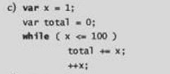

El error se encuentra en el inicio del if despues de 65) no se pone ; se deben abrir llaves {}
El error se encuentra en la apertura de llaves al abrirse una se abre con [ y lo correcto es abrir con { ademas que esta de la siguiente forma [}

El error se encuentra en que no se hizo la apertura de llaves {} por lo tanto este no se puede correr de forma correcta
El error se encuentra que nunca se cerro la llave con }